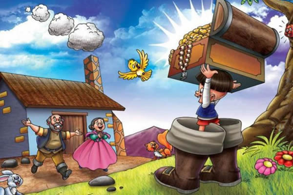

Érase una vez un pobre campesino. Una noche se encontraba sentado, atizando el fuego, mientras que su esposa hilaba sentada junto a él. Ambos se lamentaban de hallarse en un hogar sin niños.
-¡Qué triste es no tener hijos! -dijo él-. En esta casa siempre hay silencio, mientras que en los demás hogares hay tanto bullicio y alegría...
-¡Es verdad! -contestó la mujer suspirando-. Si por lo menos tuviéramos uno, aunque fuese muy pequeño y no mayor que el pulgar, seríamos felices y lo querríamos de todo corazón.
Y entonces sucedió que la mujer se indispuso y, después de siete meses, dio a luz a un niño completamente normal en todo, si exceptuamos que no era más grande que un dedo pulgar.
-Es tal como lo habíamos deseado. Va a ser nuestro hijo querido.
Y debido a su tamaño lo llamaron Pulgarcito. No le escatimaron la comida, pero el niño no creció y se quedó tal como era en el momento de nacer. Sin embargo, tenía una mirada inteligente y pronto dio muestras de ser un niño listo y hábil, al que le salía bien cualquier cosa que se propusiera.
Un día, el campesino se aprestaba a ir al bosque a cortar leña y dijo para sí:
-Ojalá tuviera a alguien que me llevase el carro.
-¡Oh, padre! -exclamó Pulgarcito- ¡Ya te llevaré yo el carro! ¡Puedes confiar en mí! En el momento oportuno lo tendrás en el bosque.
El hombre se echó a reír y dijo:
-¿Cómo podría ser eso? Eres demasiado pequeño para llevar de las bridas al caballo.
-¡Eso no importa, padre! Si mamá lo engancha, yo me pondré en la oreja del caballo y le iré diciendo al oido por dónde ha de ir.
-¡Está bien! -contestó el padre-, probaremos una vez.
Cuando llegó la hora, la madre enganchó el carro y colocó a Pulgarcito en la oreja del caballo, donde el pequeño se puso a gritarle por dónde tenía que ir, tan pronto con un "¡Heiii!", como con un "¡Arre!". Todo fue tan bien como si un conductor de experiencia condujese el carro, encaminándose derecho hacia el bosque.
Sucedió que, justo al doblar un recodo del camino, cuando el pequeño iba gritando "¡Arre! ¡Arre!" , acertaron a pasar por allí dos forasteros.
-¡Cómo es eso! -dijo uno- ¿Qué es lo que pasa? Ahí va un carro, y alguien va arreando al caballo; sin embargo no se ve a nadie conduciéndolo.
-Todo es muy extraño -dijo el otro-. Vamos a seguir al carro para ver dónde se para.
Pero el carro se internó en pleno bosque y llegó justo al sitio donde estaba la leña cortada. Cuando Pulgarcito vio a su padre, le gritó:
-¿Ves, padre? Ya he llegado con el carro. Bájame ahora del caballo.
El padre tomó las riendas con la mano izquierda y con la derecha sacó a su hijo de la oreja del caballo. Pulgarcito se sentó feliz sobre una brizna de hierba. Cuando los dos forasteros lo vieron se quedaron tan sorprendidos que no supieron qué decir. Ambos se escondieron, diciéndose el uno al otro:
-Oye, ese pequeñín bien podría hacer nuestra fortuna si lo exhibimos en la ciudad y cobramos por enseñarlo. Vamos a comprarlo.
Se acercaron al campesino y le dijeron:
-Véndenos al pequeño; estará muy bien con nosotros.
-No -respondió el padre- es mi hijo querido y no lo vendería ni por todo el oro del mundo.
Pero al oír esta propuesta, Pulgarcito trepó por los pliegues de la ropa de su padre, se colocó sobre su hombro y le susurró al oído:
-Padre, véndeme, que ya sabré yo cómo regresar a casa.
Entonces, el padre lo entregó a los dos hombres a cambio de una buena cantidad de dinero.
-¿Dónde quieres sentarte? -le preguntaron.
-¡Da igual ! Colocadme sobre el ala de un sombrero; ahí podré pasearme de un lado para otro, disfrutando del paisaje, y no me caeré.
Cumplieron su deseo y, cuando Pulgarcito se hubo despedido de su padre, se pusieron todos en camino. Viajaron hasta que anocheció y Pulgarcito dijo entonces:
-Bájadme un momento; tengo que hacer una necesidad.
-No, quédate ahí arriba -le contestó el que lo llevaba en su cabeza-. No me importa. Las aves también me dejan caer a menudo algo encima.
-No -respondió Pulgarcito-, yo también sé lo que son las buenas maneras. Bajadme inmediatamente.
El hombre se quitó el sombrero y puso a Pulgarcito en un sembrado al borde del camino. Por un momento dio saltitos entre los terrones de tierra y, de repente, se metió en una madriguera que había localizado desde arriba.
-¡Buenas noches, señores, sigan sin mí! -les gritó con un tono de burla.
Los hombres se acercaron corriendo y rebuscaron con sus bastones en la madriguera del ratón, pero su esfuerzo fue inútil. Pulgarcito se arrastró cada vez más abajo y, como la oscuridad no tardó en hacerse total, se vieron obligados a regresar, burlados y con las manos vacías.
Cuando Pulgarcito advirtió que se habían marchado, salió de la madriguera.
-Es peligroso atravesar estos campos de noche -pensó-; sería muy fácil caerse y romperse un hueso.
Por fortuna tropezó con una concha vacía de caracol.
-¡Gracias a Dios! -exclamó- Ahí podré pasar la noche con tranquilidad.
Y se metió dentro del caparazón. Un momento después, cuando estaba a punto de dormirse, oyó pasar a dos hombres; uno de ellos decía:
-¿Cómo haremos para robarle al cura rico todo su oro y su palta?
-¡Yo podría decírtelo! -se puso a gritar Pulgarcito.
-¿Qué fue eso? -dijo uno de los espantados ladrones-; he oído hablar a alguien.
Se quedaron quietos escuchando, y Pulgarcito insistió:
-Llévadme con vosotros y os ayudaré.
-¿Dónde estás?
-Buscad por la tierra y fijaos de dónde viene la voz -contestó.
Por fin los ladrones lo encontraron y lo alzaron hasta ellos.
-A ver, pequeñajo, ¿cómo vas a ayudarnos?
-¡Escuchad! Yo me deslizaré por las cañerías hasta la habitación del cura y os iré pasando todo cuanto queráis.
-¡Está bien! Veremos qué sabes hacer.
Cuando llegaron a la casa del cura, Pulgarcito se introdujo en la habitación y se puso a gritar con todas sus fuerzas.
-¿Quereis todo lo que hay aquí?
Los ladrones se estremecieron y le dijeron:
-Baja la voz para que nadie se despierte.
Pero Pulgarcito hizo como si no entendiera y continuó gritando:
-¿Qué queréis? ¿Queréis todo lo que hay aquí?
La cocinera, que dormía en la habitación de al lado, oyó estos gritos, se incorporó en su cama y se puso a escuchar, pero los ladrones asustados se habían alejado un poco. Por fin recobraron el valor diciéndose:
-Ese pequeñajo quiere burlarse de nosotros.
Regresaron y le susurraron:
-Vamos, nada de bromas y pásanos alguna cosa.
Entonces, Pulgarcito se puso a gritar de nuevo con todas sus fuerzas:
-Sí, quiero daros todo; sólo tenéis que meter las manos.
La cocinera, que ahora oyó todo claramente, saltó de su cama y se acercó corriendo a la puerta. Los ladrones, atemorizados, huyeron como si los persiguiese el diablo, y la criada, que no veía nada, fue a encender una vela. Cuando regresó, Pulgarcito, sin ser descubierto, se había escondido en el pajar. La sirvienta, después de haber registrado todos los rincones y no encontrar nada, acabó por volver a su cama y supuso que había soñado despierta.
Pulgarcito había trepado por la paja y en ella encontró un buen lugar para dormir. Quería descansar allí hasta que se hiciese de día para volver luego con sus padres, pero aún habrían de ocurrirle otras muchas cosas antes de poder regresar a su casa.
Como de costumbre, la criada se levantó antes de que despuntase el día para dar de comer a los animales. Fue primero al pajar, y de allí tomó una brazada de heno, precisamente del lugar en donde dormía Pulgarcito. Estaba tan profundamente dormido que no se dio cuenta de nada, y no despertó hasta que estuvo en la boca de la vaca que se había tragado el heno.
-¡Oh, Dios mío! -exclamó-. ¿Cómo he podido caer en este molino?
Pero pronto se dio cuenta de dónde se encontraba. No pudo hacer otra cosa sino evitar ser triturado por los dientes de la vaca; mas no pudo evitar resbalar hasta el estómago.
-En esta habitación tan pequeña se han olvidado de hacer una ventana -se dijo-, y no entra el sol y tampoco veo ninguna luz.
Este lugar no le gustaba nada, y lo peor era que continuamente entraba más paja por la puerta, por lo que el espacio iba reduciéndose cada vez más. Entonces, presa del pánico, gritó con todas sus fuerzas:
-¡No me traigan más forraje! ¡No me traigan más forraje!
La moza estaba ordeñando a la vaca cuando oyó hablar sin ver a nadie, y reconoció que era la misma voz que había escuchado por la noche. Se asustó tanto que cayó del taburete y derramó toda la leche. Corrió entonces a toda velocidad hasta donde se encontraba su amo y le dijo:
-¡Ay, señor cura, la vaca ha hablado!
-¡Estás loca! -repuso el cura.
Y se dirigió al establo a ver lo que ocurría; pero, apenas cruzó el umbral, cuando Pulgarcito se puso a gritar de nuevo:
-¡No me traigan más forraje! ¡No me traigan más forraje!
Ante esto, el mismo cura también se asustó, suponiendo que era obra del diablo, y ordenó que se matara a la vaca. Entonces la vaca fue descuartizada y el estómago, donde estaba encerrado Pulgarcito, fue arrojado al estiercol. Nuestro amigo hizo ímprobos esfuerzos por salir de allí y, cuando ya por fin empezaba a sacar la cabeza, le aconteció una nueva desgracia. Un lobo hambriento, que acertó a pasar por el lugar, se tragó el estómago de un solo bocado. Pulgarcito no perdió los ánimos. «Quizá -pensó- este lobo sea comprensivo». Y, desde el fondo de su panza, se puso a gritarle:
-¡Querido lobo, sé donde hallar un buena comida para ti!
-¿Adónde he de ir? -preguntó el lobo.
-En tal y tal casa. No tienes más que entrar por la trampilla de la cocina y encontrarás tortas, tocino y longanizas, tanto como desees comer.
Y Pulgarcito le describió minuciosamente la casa de sus padres.
El lobo no necesitó que se lo dijeran dos veces. Por la noche entró por la trampilla de la cocina y, en la despensa, comió de todo con inmenso placer. Cuando estuvo harto, quiso salir, pero había engordado tanto que ya no cabía por el mismo sitio. Pulgarcito, que lo tenía todo previsto, comenzó a patalear y a gritar dentro de la barriga del lobo.
-¿Te quieres estar quieto? -le dijo el lobo-. Vas a despertar a todo el mundo.
-¡Ni hablar! -contestó el pequeño-. ¿No has disfrutado bastante ya? Ahora yo también quiero divertirme.
Y se puso de nuevo a gritar con todas sus fuerzas. Los chillidos despertaron finalmente a sus padres, quienes corrieron hacia la despensa y miraron por una rendija. Cuando vieron al lobo, el hombre corrió a buscar el hacha y la mujer la hoz.
-Quédate detrás de mí -dijo el hombre al entrar en la despensa-. Primero le daré un golpe con el hacha y, si no ha muerto aún, le atizarás con la hoz y le abrirás las tripas.
Cuando Pulgarcito oyó la voz de su padre, gritó:
-¡Querido padre, estoy aquí; aquí, en la barriga del lobo!
-¡Gracias a Dios! -dijo el padre-. ¡Ya ha aparecido nuestro querido hijo!
Y le indicó a su mujer que no usara la hoz, para no herir a Pulgarcito. Luego, blandiendo el hacha, asestó al lobo tal golpe en la cabeza que éste cayó muerto. Entonces fueron a buscar un cuchillo y unas tijeras, le abrieron la barriga al lobo y sacaron al pequeño.
-¡Qué bien! -dijo el padre-. ¡No sabes lo preocupados que estábamos por ti!
-¡Sí, padre, he vivido mil aventuras. ¡Gracias a Dios que puedo respirar de nuevo aire freco!
-Pero, ¿dónde has estado?
-¡Ay, padre!, he estado en la madriguera de un ratón, en el estómago de una vaca y en la barriga de un lobo. Ahora estoy por fin con vosotros.
-Y no te volveremos a vender ni por todo el oro del mundo.
Y abrazaron y besaron con mucho cariño a su querido Pulgarcito; le dieron de comer y de beber, lo bañaron y le pusieron ropas nuevas, pues las que llevaba se habían estropeado en su accidentado viaje.